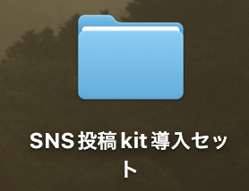
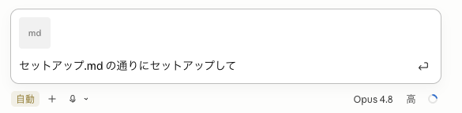
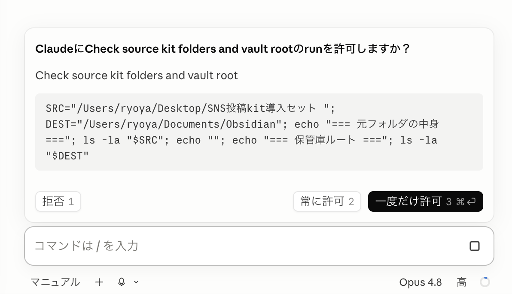

⚠️ 使用上の注意事項
本マニュアルは、あなたの「分身AI」と「SNS投稿キット（6つのスキル）」をClaude Codeに導入し、SNSの台本づくりを任せられる状態にするための手順を解説します。
- 配布したキット一式は、第三者への配布・共有NGです（あなた専用です）。
- キットの中には、見本としてあべむつきの設定・実例・実測数字が入っています。その数字・実績・体験談を自分のものとして発信しないでください（実績詐称・丸パクリになります。借りてよいのは型・構成だけ）。
- キットの構造ファイル（SKILL.md・CLAUDE.md・READMEなど）は自分で書き換えないでください。ルールを変えたいときは、AIに言葉で伝えればOKです。
- 重要なファイル、機密情報、APIキー、パスワードなどは、Obsidianフォルダに入れないでください。
📄 免責事項
本マニュアルは情報提供を目的として作成されたものであり、内容の正確性・完全性・最新性を保証するものではありません。記載された手順・設定・操作等を実行したことにより生じたいかなる損害についても、作成者は一切の責任を負いません。利用はすべて利用者ご自身の判断と自己責任のもとで行ってください。AnthropicおよびClaude Codeの仕様・料金・利用条件は予告なく変更される場合があるため、必ず公式情報をご確認ください。
第1章 事前準備ができているか確認する
このマニュアルは、事前準備（宿題）が終わっている前提で進みます。まず、次の2つを確認しましょう。
1. ObsidianフォルダがClaude Codeとつながっているか
Claude Codeで自分のObsidianフォルダを開き、チャットにこう送ってみてください。
ようこそ.md が一覧に返ってきたら準備OKです。
まだObsidianフォルダを作っていない・連携していない方は、先にこちら。
事前準備マニュアル（Obsidian × Claude Code 導入・連携）を済ませてから、このページに戻ってきてください。
2. 分身AIプロンプトが完成しているか
前のパートで作った「完成版の分身AIプロンプト」を、コピペできる状態で手元に用意しておいてください（第4章で使います）。
第2章 キットを受け取って解凍する
まず、キット一式（SNS投稿kit導入セット.zip）を下のボタンからダウンロードしてください。
ダウンロードしたら、「フォルダ」に戻します（解凍）。zipのままでは使えません。
Macの方
zipファイルをダブルクリックするだけ。「SNS投稿kit導入セット」フォルダができます。
Windowsの方
zipファイルを右クリック →「すべて展開」。「開く」だけだと展開されないので注意してください。

フォルダの中身
| 中身 | なにもの？ |
|---|---|
セットアップ.md | ★これをAIに読ませると、導入が全部自動で進む「指示書」 |
insta-kit / youtube-kit | あなた専用の台本キット（使いながら育てる） |
abe-insta-kit / abe-youtube-kit | あべむつきのお手本キット（見て学ぶ用） |
第3章 AIに一括セットアップしてもらう
ここが今日のメインです。といっても、やることは「1つのファイルをドラッグして、ひとこと送る」だけ。あとはAIが、キット4箱の引っ越しから6つのスキルの設置まで全部やってくれます。
1. Claude Codeで自分のObsidianフォルダを開く
第1章で確認した、自分のObsidianフォルダを開いた状態にします。
2. セットアップ.md をチャットにドラッグ＆ドロップする
解凍したフォルダの中の セットアップ.md を、Claude Codeのチャット入力欄にドラッグ＆ドロップします。

3. 続けて、このひとことを送る
送信すると、AIが3ステップ（📦引っ越し → 🔧スイッチの取り付け → 🚀起動チェックの案内）を自動で進めます。
途中で「許可しますか？」と聞かれたら、〈許可〉または〈常に許可〉を押して進めてください。キットのファイルを用意しているだけなので大丈夫です。

4. 【重要】新しいセッションを開き直す
「スイッチ6つ、取り付け完了！」と出たら、いったんチャットを終了して、Obsidianフォルダを開いたまま新しいセッションを開始してください。スキル（呼び出しボタン）は、開き直したときに読み込まれます。
新しいセッションで入力欄に「/」を打って、my-bunshin-ai などが候補に出てきたら成功です。

第4章 分身AIを立ち上げる
まずは、あなたの分身AIに命を吹き込みます。
1. /my-bunshin-ai と打つ
入力欄に「/my-bunshin-ai」と打って送信します。「完成した分身AIプロンプトを貼ってね」と案内が来ます。
2. 完成版の分身AIプロンプトを貼る
手元に用意しておいた分身AIプロンプトの全文を、そのままチャットに貼りつけて送信します。AIがObsidianフォルダの中（core/分身AIプロンプト.md）に登録してくれます。
3. 「自己紹介して」で動作テスト
あなたらしい口調・内容で返ってきたら、分身AIの完成です🎉
4. ダメ出しを1つして「育つ」のを見る
返事に対して「そうじゃない、もっとこう」と1つ直してみてください。分身AIが教育ノートにメモして、同じ注意を二度としなくなります。会話の中の大事なことは記録フォルダに自動で貯まっていき、使うほどあなたに詳しくなります。
これからは、このスキルを呼ぶだけでいつでも分身AIが立ち上がります。相談・壁打ち・文章チェック、なんでも話しかけてOKです。
第5章 あべむつきのお手本を体験する
自分のキットを育てる前に、「プロならこう作る」を先に見ておきましょう。お手本キットは、セットアップ不要・ネタ案を渡すだけで、あべむつきの設定でプロの台本を1本作って見せてくれます。
1. インスタのお手本（/my-abeinsta）
「/my-abeinsta」と打って、作ってほしいネタを伝えます。例：
2. YouTubeのお手本（/my-abeyoutube）
「/my-abeyoutube」と打って、同じようにネタを伝えます。例：
どちらも「設計3行（型・狙い・使う事実）」つきで台本が出てきます。プロがどう考えて組み立てているかに注目して見てください。
お手本の文章・数字・実績・体験談は、全部あべむつきのものです。自分の投稿・動画にそのまま使うのは絶対NG。型・構成・作り方などは参考にしてOKです。
第6章 自分のキットを組み立てて育てる
お手本の感覚が掴めたら、いよいよ自分のキットです。メインの発信に近い方から1つ選んでください（もう片方は帰ってからでOK）。
1. スキルを呼んで「はじめる」
「/my-insta」または「/my-youtube」と打つと、AIが5つの棚を順番に一緒に組み立ててくれます（自分のこと → 知識 → 書き方の好み → 言わない言葉 → 参考の見本）。
質問に完璧に答えられなくても大丈夫。「分からない」と言えばAIが仮置き案を出します。完成度7割でOK。手元に無いものは「あとで」でスキップできます。
2. 1本目の台本を作る
組み立てが終わると、AIがそのまま「1本目の台本を作りましょう」と案内します。AIが先に見せてくる「設計メモ」（どう書くかの計画）にOKを出すと、台本が届きます。
3. ダメ出しして育てる
最初から完璧な台本は出ません。それが正常です。「ここが違う」とフィードバックするほど、あなた専用ルールが増えて、一発目の精度がどんどん上がっていきます。
ふだんの使い方の例
/my-insta ◯◯の台本を作って/my-youtube ネタも任せるから台本を作って/my-insta この台本をストックして（＋伸びてる台本を貼る）/my-insta 数字を報告します。再生◯・保存◯・いいね◯第7章 発展編：自分だけのスキルを作る
ここまでに使った6つのスキルは、じつは全部同じ仕組みでできています。ということは——あなたの繰り返し作業も、同じようにスキルにできます。
「/my-obsidian-skill」と打つと、AI秘書が「毎回やっていて面倒なこと」をヒアリングして、あなた専用の新しいスキルを一緒に作ってくれます。
新しく作ったスキルは、新しいセッションを開くと「/」の候補に現れます。今日の6つと同じように、あなたの仕事に合わせてどんどん増やしていけます。
AIは、育てるほど、あなたになる。